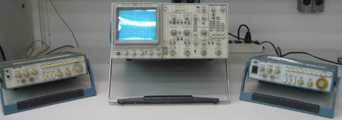
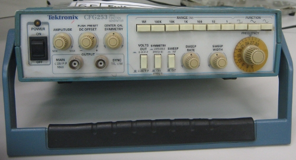

As Curvas de Lissajous

O vídeo e uma aplicação
Figura 1 Foto de um osciloscópio
Figura 2 Legenda da fig 2
Figura 3 Legenda da fig 3
Uma aplicação bastante comum em laboratórios de física e engenharia das curvas de Lissajous é a determinação da frequência de uma onda senoidal. Para isso, basta um osciloscópio (figura 1) e uma outra fonte de onda senoidal.
O osciloscópio é um aparelho que recebe sinais de ondas de diversos tipos e os representa graficamente.
Os dois aparelhos ao lado dele (figura 2) são emissores de ondas. Girando os controles analógicos (figura 3), pode-se variar a frequência destas ondas.
Nesse caso, o emissor de ondas à direita vai gerar o componente horizontal (x(t)). Já o emissor à esquerda vai gerar o componente vertical (y(t)). Como as duas ondas são senoidais, então a curva resultante vai ser dada por:
x(t)= a1*sen(b1*x+c1)+d1
y(t)= a2*sen(b2*x+c2)+d2
Como sen(x) = cos(x+π/2), o x(t) pode ser escrito como uma função cosseno e, portanto, a curva resultante será uma curva de Lissajous. Analisando o formato dessa curva, é possível obter informações sobre b1 e b2.
Na próxima parte, você poderá assistir a um vídeo ilustrando esse procedimento.